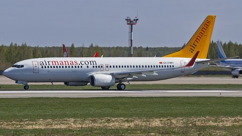

Авиакасса «Асман» работает в Бишкеке с 2024 года и помогает пассажирам купить авиабилеты
на рейсы более чем 40 авиакомпаний. Наша касса находится рядом с международным аэропортом
«Манас», а на сайте билет можно оформить круглосуточно.
Авиакасса «Асман» работает в Бишкеке с 2024 года и помогает пассажирам купить авиабилеты
на рейсы более чем 40 авиакомпаний. Наша касса находится рядом с международным аэропортом
«Манас», а на сайте билет можно оформить круглосуточно.
Авиабилеты из Бишкека по всему миру
О компании | Популярные направления | Расписание рейсов | Покупка билетов | Визитка сайта | Карта-меню | Карта

Нажмите на самолёт, чтобы перейти к покупке билетов
Авиакасса «Асман» работает в Бишкеке с 2024 года и помогает пассажирам купить авиабилеты
на рейсы более чем 40 авиакомпаний. Наша касса находится рядом с международным аэропортом
«Манас», а на сайте билет можно оформить круглосуточно.
Мы продаём билеты на внутренние рейсы по Кыргызстану (Бишкек — Ош, Бишкек — Джалал-Абад, Бишкек — Каракол) и на международные направления: Россия, Турция, ОАЭ, Казахстан, Китай, Европа. Кассиры помогут подобрать удобный рейс, оформить багаж, выбрать место в салоне и забронировать гостиницу.
Оплата принимается наличными, банковскими картами Элкарт, Visa и MasterCard, а также через мобильные кошельки. Электронный билет приходит на e-mail сразу после оплаты.
 Самые востребованные направления наших пассажиров:
Самые востребованные направления наших пассажиров:
Для постоянных клиентов действует бонусная программа: каждый пятый билет по направлению Бишкек — Ош со скидкой 50%. Студентам и пенсионерам — скидка 10% на внутренние рейсы.
© 2024-2026 Авиакасса «Асман». г. Бишкек, пр. Чуй, 215